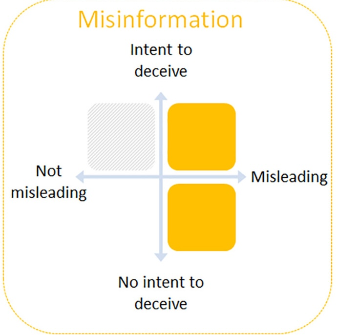
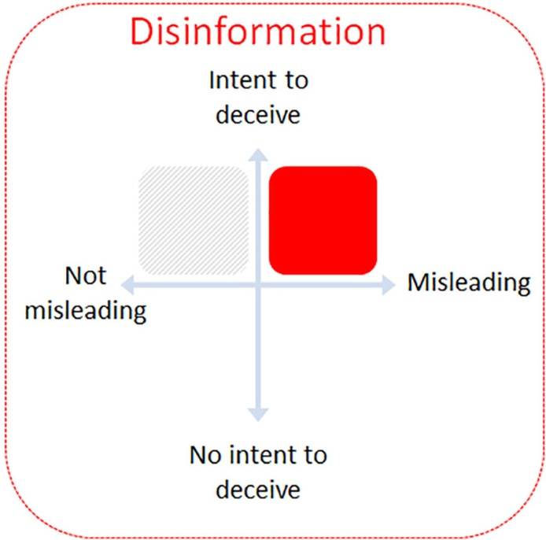
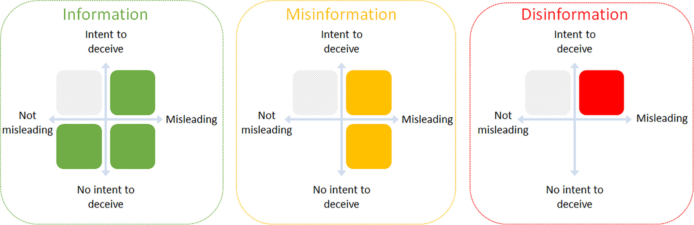
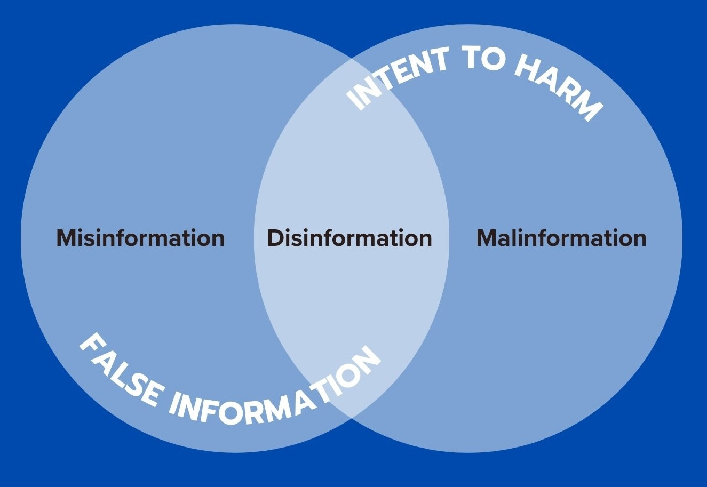
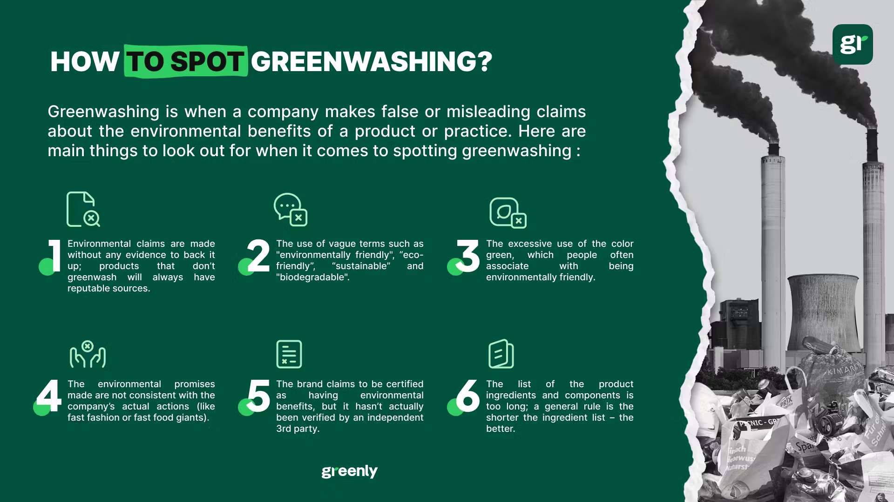
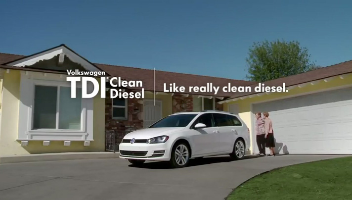
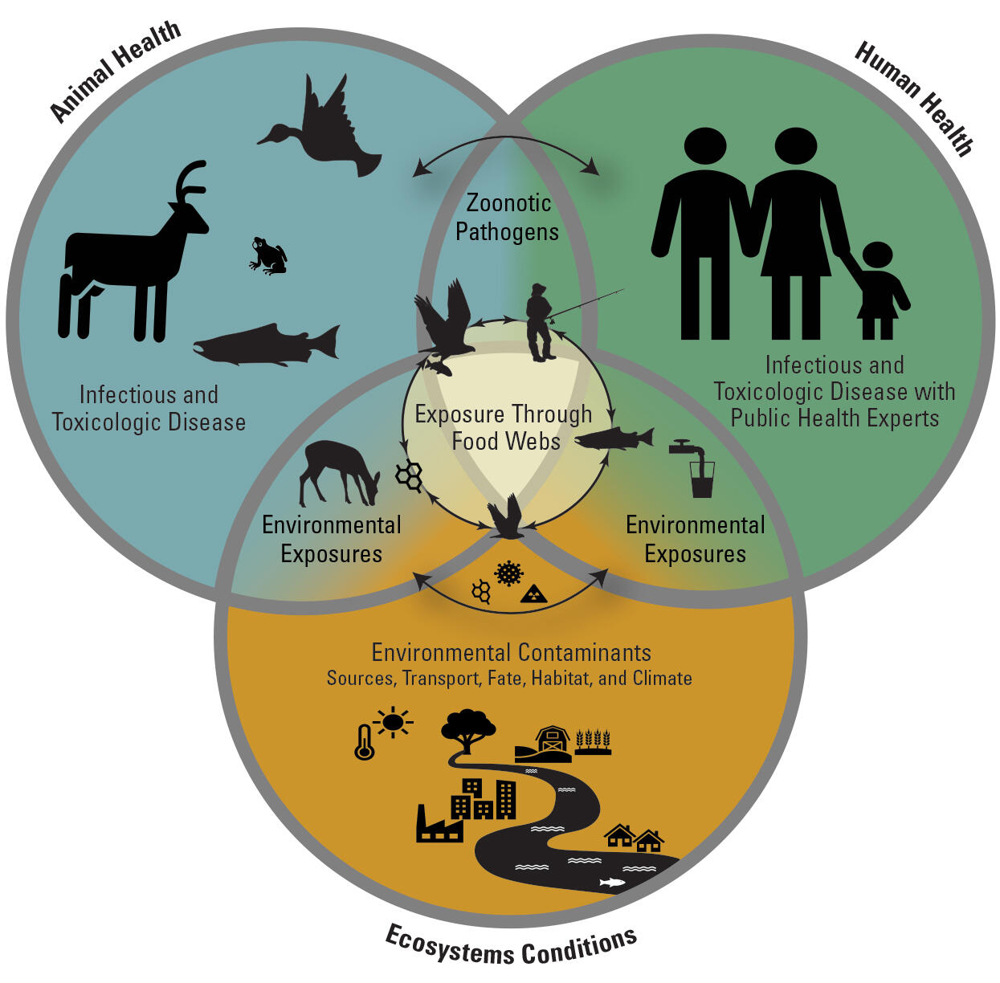
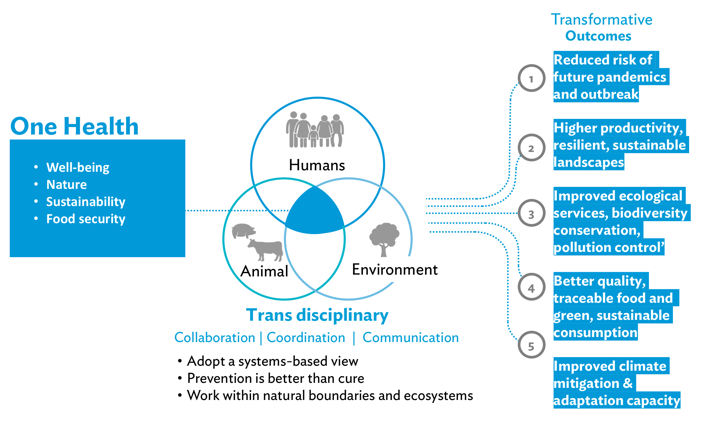
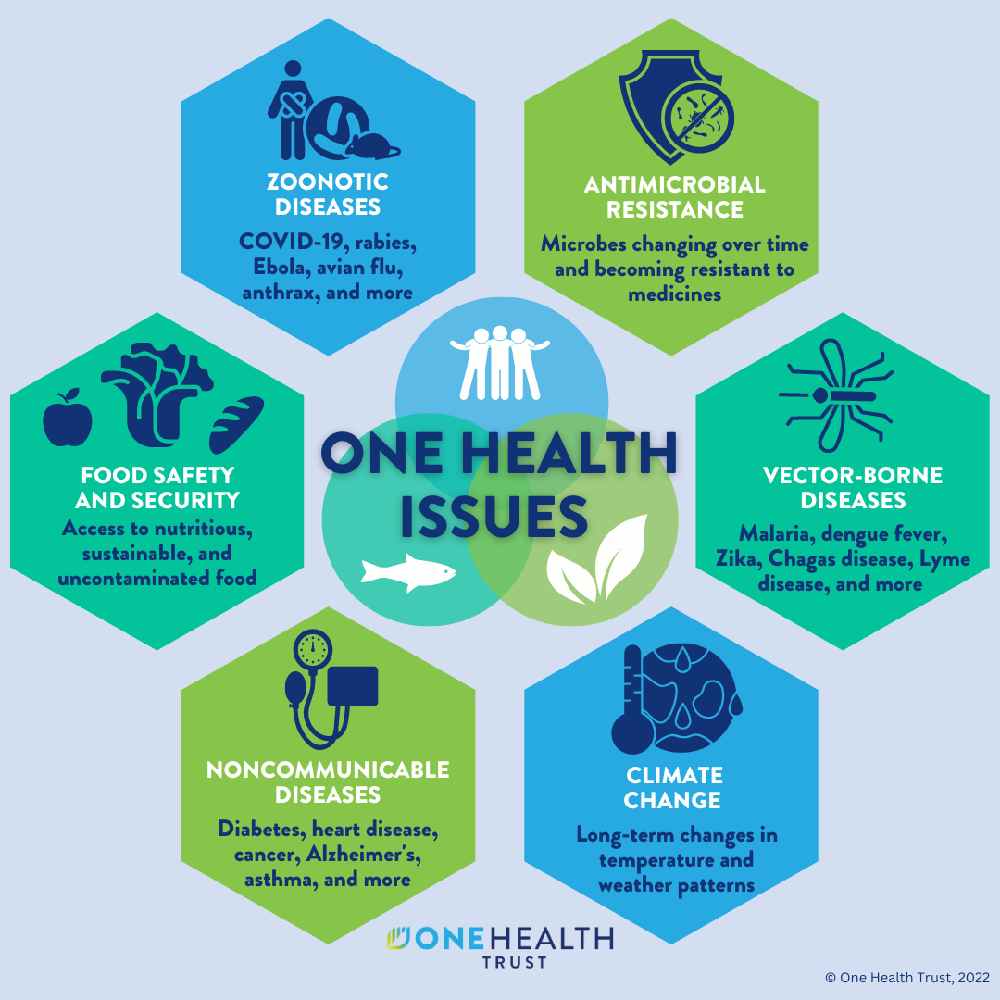
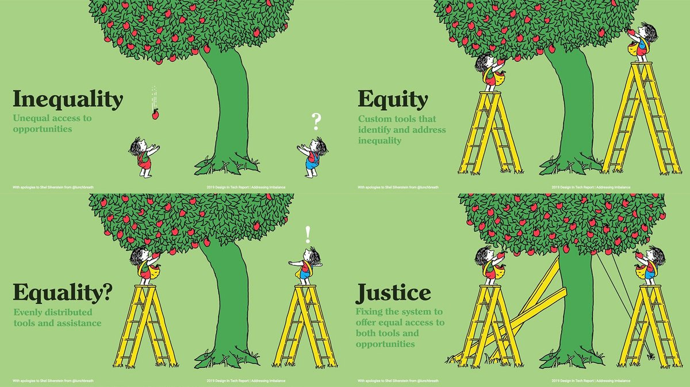

Human Health & the Environment
University of Nebraska Omaha
Thu Aug 28, 2025
False information shared without the intention to mislead.
False information deliberately created and spread to deceive or cause harm.
Genuine information used out of context to cause harm.

Genuine information used out of context to cause harm.
Misinformation, Disinformation, or Malinformation?

Examples?


The health of humans, domestic and wild animals, plants, and the wider environment (including ecosystems) are closely linked and inter-dependent.
One Health aims to sustainably balance and optimize the health of people, animals and ecosystems.


The just treatment and meaningful involvement of all people in environmental decision-making to ensure full protection from disproportionate environmental and health impacts, and equitable access to a healthy, sustainable, and resilient environment.
– U.S. Environmental Protection Agency (EPA) (2024)
